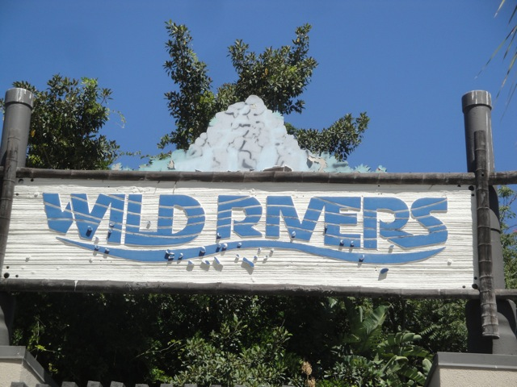
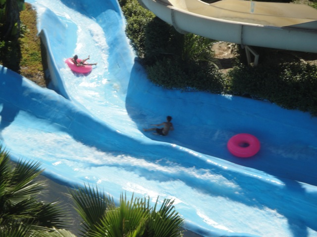
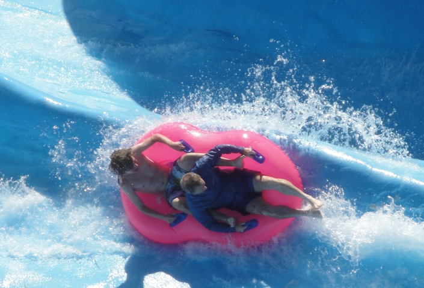
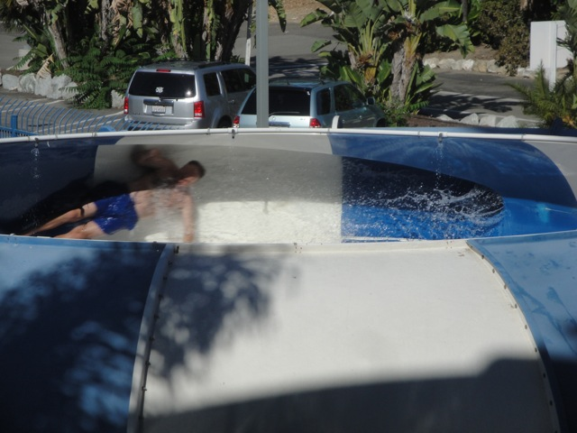
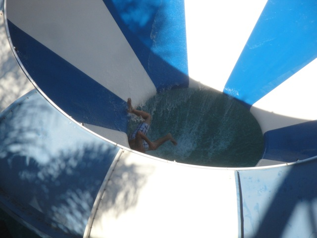

Wild Rivers 2011

All right. This was our 4th visit to Wild Rivers. We wern't originally planning on coming back this year, but this place is just so awesome that we just had to take another visit. Anyways, we're here.
And how else do you start off a day at Wild Rivers than with a couple INSANE rides on Bombay Blasters!!!
 Yeah. This is just an "average" sized splash on Bombay Blasters. You should see when Cody and I slide down. We soak the people up at the very top of the Top Thrill Dragster Stands!!! (So don't bring your nachos up there.)
Yeah. This is just an "average" sized splash on Bombay Blasters. You should see when Cody and I slide down. We soak the people up at the very top of the Top Thrill Dragster Stands!!! (So don't bring your nachos up there.)
LAUNCH!!!!!!!!
Hmm. How about that? All these years, we've been saying Switzer Falls wrong. Apparently, it's called Sweetzer Falls.
 "HOLY SH*T!!! DO MY EYES DECIEVE ME!!!? IS NAIROBI EXPRESS ACTUALLY OPEN!!!!!!!!!!?"
"HOLY SH*T!!! DO MY EYES DECIEVE ME!!!? IS NAIROBI EXPRESS ACTUALLY OPEN!!!!!!!!!!?"
 Not only did we find it open, but it was open ALL DAY!!!!!! That's amazing considering when we rode it in 2009, it was only open for 20 minutes.
Not only did we find it open, but it was open ALL DAY!!!!!! That's amazing considering when we rode it in 2009, it was only open for 20 minutes.
While Nairobi Express is still awesome and all, it was actually pretty painful since it really scratched your back, and it scratched it good.
 All right. Time for a ride on Surf Hill.
All right. Time for a ride on Surf Hill.
 "NO!!!!!!! PLEASE DON'T LET MY MAT LEAVE ME!!!!!!!!!!"
"NO!!!!!!! PLEASE DON'T LET MY MAT LEAVE ME!!!!!!!!!!"
For anyone taking a trip to Wild Rivers, here's a quick tip. If you're riding Surf Hill, don't ride it sticking your arms out like a bird for it hit the slide and I got a rubber burn.
While it's sad that they didn't have funnel dogs this year, Wild Rivers still has good food as we got a Bacon Hot Dog with BBQ Sauce and Ranch!!! Hey Raging Waters, Where's your BBQ Sauce and Ranch!!!?
 All right. Story Time. Cody's cousin bought one of those really expensive $10.00 smoothies in a pineapple, took a sip, and then decided that she didn't want it anymore. She was about to THROW AWAY A $10.00 SMOOTHIE when we just HAPPENED to get off Bombay Blasters and just gave it to us!!!! Not only can't I stop laughing at the fact that she just wasted $10.00, but that smoothie is really freaking good. Best Smoothie I ever had. I don't get why she didn't like it.
All right. Story Time. Cody's cousin bought one of those really expensive $10.00 smoothies in a pineapple, took a sip, and then decided that she didn't want it anymore. She was about to THROW AWAY A $10.00 SMOOTHIE when we just HAPPENED to get off Bombay Blasters and just gave it to us!!!! Not only can't I stop laughing at the fact that she just wasted $10.00, but that smoothie is really freaking good. Best Smoothie I ever had. I don't get why she didn't like it.
 I never want to get out of this hot tub.
I never want to get out of this hot tub.
Hmm. A ride on Wahtubee is in order.
WAHTUBEE AWAY!!!!!!!!
Considering how little attention we've given Cobra & Wipeout in our previous Wild Rivers Updates and the fact that they made our Top 10 Waterslide list, we made sure to talk about both of these slides in this update.
First dissapointing thing to report, the Lifeguards here were not good. After we got up to the top of Cobra, and waiting for the go signal, the lifeguard just shouted "GOOOOOOOOO YOU STUPID PEOPLE!!!!" Umm, lady, You do not talk to guests that way!!!!! I know!!!! I'm a ride operator at Six Flags Magic Mountain!!! I didn't even have your rude attitude when dealing that one crazy bitch at Roaring Rapids (I'll tell you all about that story later in our big SFMM Summer Update).
The laterals you get on Cobra are INSANE!!!!! You totally go beyond 90 degrees on those turns, which pretty much blinds you with water till you plop into the pool.
And while Wipeout doesn't have quite as insane laterals, it pretty much has that water tank start to really make you take off!!!
 All right. Time for some sweet backwards Congo Madness!!!
All right. Time for some sweet backwards Congo Madness!!!

Dude!!!! This kid fell off his raft halfway through the slide!!! And he wasn't even on the insane side!!!!

While none of ours rafts flipped over today and no one got kicked in the head, we still got some insane rides on Congo today.
 Dude!!! We had the best ride on Patriot ever today!!!! We got Cody, Alex, William, and myself in a raft, which made the raft go fast anyways, but we then lifted up our raft at the top of the drop and got some crazy airtime and went really high up the half pipe!!!!! It was without a doubt, the best ride on Patriot ever!!!
Dude!!! We had the best ride on Patriot ever today!!!! We got Cody, Alex, William, and myself in a raft, which made the raft go fast anyways, but we then lifted up our raft at the top of the drop and got some crazy airtime and went really high up the half pipe!!!!! It was without a doubt, the best ride on Patriot ever!!!
 You didn't seriously think we'd skip Bazooka Bowls and miss out on the true helix of death!!!!
You didn't seriously think we'd skip Bazooka Bowls and miss out on the true helix of death!!!!

While the initial thump into the bowl wasn't too bad this year, it really scratched your back on all the spinning in the bowl.

Typical bastard getting flushed from Bazooka Bowls.
Oh yeah. My watch died today at Wild Rivers. It just shorted out and made this buzzing noise. Oh well. It had a good life. Time to go to Target and get a new one.
 And how else do you end a day at Wild Rivers than with more Bombay Blasters?
And how else do you end a day at Wild Rivers than with more Bombay Blasters?
Once again, we had an amazing time at Wild Rivers and just loved every part of this awesome water park. Hopefully we'll be back in 2012. =)
Oh, and L.A looks so nice without all that smog!!!! Glad Carmageddon scared everyone away from the freeways and briefly kept L.A Smog Free. (And thank you media for overhyping Carmegeddon to freaking death.)
Home